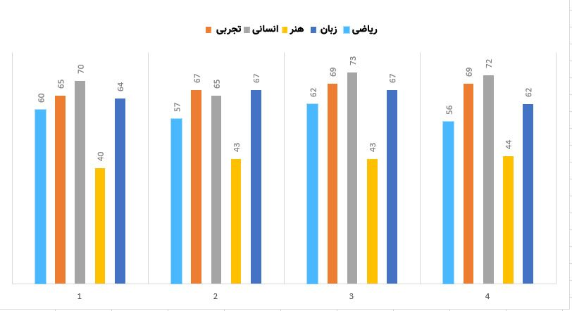
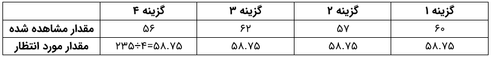
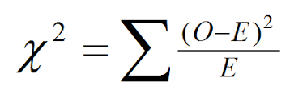
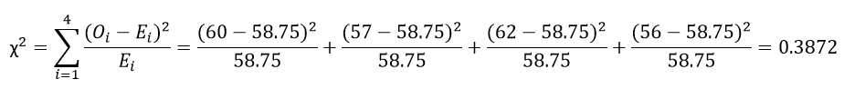
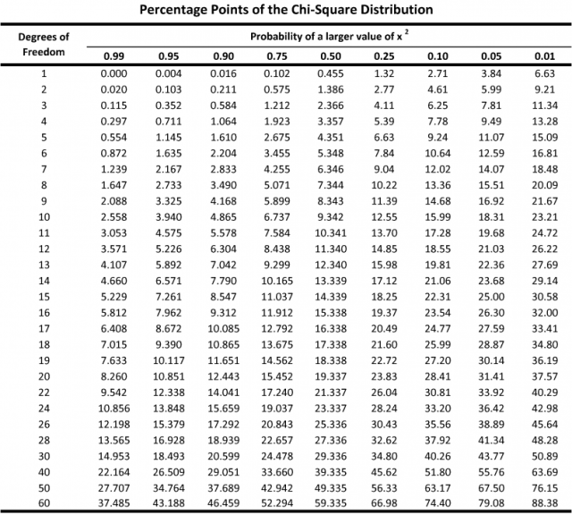
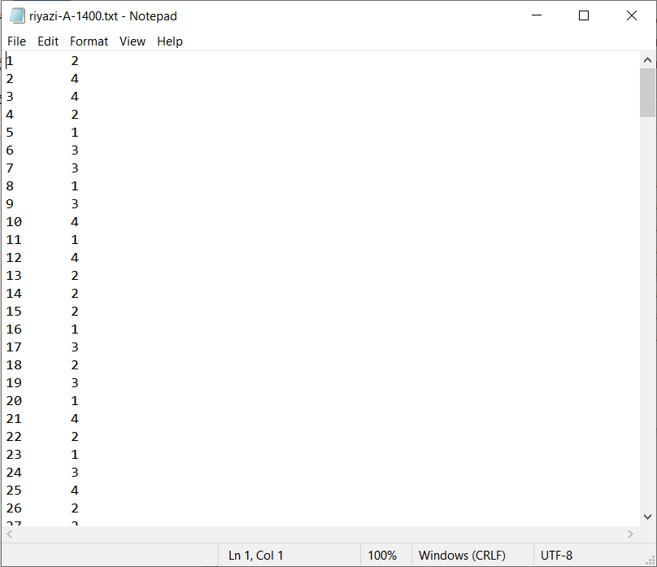
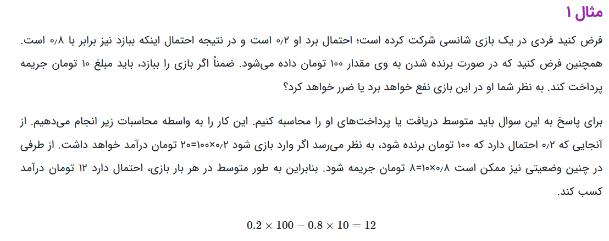

در این مقاله کوتاه میخوام بررسی کنم که اگر در کنکور به صورت تصادفی گزینه ها رو انتخاب کنیم چه اتفاقی میافته؟! اصلا بیاید کنکور رو بذاریم کنار. فرض کنید این مقاله قصد داره یه سری مفاهیم آماری رو در قالب این موضوع بررسی کنه.برای انجام این کار پاسخنامه های کنکور سراسری ۱۴۰۰ رو از لینک زیر دانلود کردم :
اول بیاید بررسی کنم جواب های صحیح به چه صورتی توزیع شدند. به زبان ساده تر، یعنی چند تا گزینه ۱، چند تا گزینه ۲، چند تا گزینه ۳ و چند تا گزینه ۴ داریم. پس میام و هیستوگرام جواب های صحیح رو رسم میکنم :

به صورت چشمی و با نگاه کردن به نمودار بالا میشه نتیجه گرفت که جواب های صحیح به صورت یکنواخت توزیع شدند. یکنواخت یعنی چی؟ یعنی جواب های صحیح به شکل کاملا مساوی بین گزینه های مختلف تقسیم بشن. البته در اینجا به صورت تقریبا مساوی تقسیم شدند ولی اشکال نداره، ما قبول میکنیم :)حالا اگر تعداد داده های ما زیاد بود و نتونستیم چشمی این موضوع رو بررسی کنیم چه خاکی باید به سر بریزیم؟ اینجاست که باید از آزمون برازش Chi Square کمک بگیریم! من اینجا به صورت خیلی خلاصه این آزمون رو توضیح میدم و برای اطلاعات بیشتر میتونید این مقاله و این ویدئو رو ببینید. اول بیاید جدول زیر رو برای کنکور ریاضی تشکیل بدیم :

مقدار مشاهده شده در جدول بالا همون هیستوگرام جواب های صحیحه که بالاتر بررسیش کردیم. حالا اگر توزیع جواب های صحیح کاملا یکنواخت باشه، ما انتطار داریم به هر گزینه ۵۸.۷۵ تا سوال برسه که میشه مقدار مورد انتظار. یعنی اگر توزیع کاملا یکنواخت باشه، ما انتظار داریم به هر گزینه ۵۸.۷۵ تا سوال برسه! آزمون Chi Square یه رابطه داره که به صورت زیره :

در رابطه بالا، O مقدار مشاهده شده (Observed) و E مقدار مورد انتظار (Expected) است. با توجه به توضیحاتی که دادم، مقدار χ به صورت زیر محاسبه میشه :

این کار رو با استفاده از کتابخونه scipy در پایتون هم میتونستیم انجام بدیم :بعد از اینکه این مقدار رو محاسبه کردیم باید چیکار کنیم؟ اول به جدول زیر که جدول توزیع Chi Square است توجه کنید (این جدول رو از این لینک برداشتم) :

ستون اول Degree of Freedom یا درجه آزادی رو در توزیع Chi Square نشون میده که از ۱ تا ۶۰ مقداردهی شده. درجه آزادی رو چه جوری تعیین کنیم؟ خیلی ساده! چند تا کلاس/دسته/گزینه داریم؟ آفرین ۴ تا! پس ۳=۱-۴ میشه درجه آزادی ما در این مسئله!به اون اعداد ۰.۰۱ تا ۰.۹۹ که در بالای جدول نوشته شده میگن significance level یا سطح اهمیت. یعنی چی؟ اول ببینیم هدف ما از انجام این تست چیه؟ ما میخوایم بررسی کنیم که آیا توزیع جواب های صحیح بین گزینه های مختلف به صورت یکنواخت انجام شده یا نه. اگر significance level یا سطح اهمیت رو ۰.۰۵ در نظر بگیریم، یعنی ۵ درصد این احتمال وجود داره که توزیع داده های ما یکنواخت نباشه، اما Chi Square بگه یکنواخته. در واقع جوابی که در آزمون به ما میده اطمینان ۹۵ درصدی داره. در خیلی از مسائل میگن سطح اهمیت رو همین ۰.۰۵ در نظر بگیرید کفایت میکنه. منم سطح اهمیت رو در این مسئله ۰.۰۵ در نظر میگیرم.حالا باید چیکار کنیم؟ در سطر ۳ و ستون ۰.۰۵ مقدار ۷.۸۱ رو داریم. مقداری که ما محاسبه کردیم ۰.۳۸ بود. چون ۰.۳۸ کوچکتر از ۷.۸۱ است پس توزیع داده های ما یکنواخته. به همین سادگی! این کار رو اگر برای کنکور تجربی، انسانی و … هم انجام بدید همین نتیجه رو میده.الان میخوام بررسی کنم که اگر به صورت تصادفی (با توزیع یکنواخت) به تست ها جواب بدیم نتیجه به چه صورتی میشه؟ برای انجام این کار از کد زیر استفاده کردم :محتویات فایل riyazi-A-1400.txt به صورت زیره :

در هر سطر از این فایل، ابتدا شماره سوال رو داریم و مقابلش هم گزینه صحیح مشخص شده. در خط ۳ و ۴ محتویات این فایل رو خوندم و در متغیر lines قرار دادم. بعد یک حلقه for تشکیل دادم که هر بار میاد و خط به خط از متغیر lines میخونه و عدد گزینه صحیح رو در متغیر correct_choice قرار میده. بعد میاد و یک عدد تصادفی بین ۱ تا ۴ با توزیع یکنواخت انتخاب میکنه و اون رو داخل متغیر random_choice قرار میده. اگر عدد تصادفی انتخاب شده با عدد گزینه صحیح یکی باشه، متغیر correct_count رو یک واحد زیاد میکنه. برای اینکه نتیجه دقیق تری داشته باشیم، من این کار رو num_iteration بار انجام میدم و در نهایت میانگین میگیرم. در این مثال مقدار num_iterationرو ۱۰۰ هزار در نظر گرفتم.نتیجه ۵۹≅۵۸.۷۳۵۴۵ شد. یعنی اگر گزینه ها رو به صورت تصادفی انتخاب کنیم، به صورت میانگین به ۵۹ سوال از ۲۳۵ سوال پاسخ صحیح میدیم. با توجه به اینکه توی کنکور نمره منفی وجود داره، پس هر ۳ پاسخ غلط، ۱ پاسخ صحیح رو هم از بین میبره. بنابراین اگر تعداد پاسخ های صحیح ۵۹ و تعداد پاسخ های غلط ۱۷۶ باشه، درصد (نمره خام) ما ۰.۱ درصد میشه. یعنی تقریبا صفر میشه!الان میخوام به صورت ریاضی ثابت کنم که اگر به صورت تصادفی (با توزیع یکنواخت) به سوالات پاسخ بدید نمره خام شما میشه صفر! برای انجام این کار قصد دارم از امید ریاضی استفاده کنم. اگر نمیدونید امید ریاضی چیه، میتونید این لینک و این لینک رو مطالعه کنید. مثال زیر به نظرم خیلی خوب میتونه مفهوم امید ریاضی رو توضیح بده :

حالا بیاید برای مسئله خودمون این محاسبات رو انجام بدیم. در یک سوال ۴ گزینهای، احتمال اینکه پاسخ صحیح رو انتخاب کنیم ۰.۲۵ (یک چهارم) است و احتمال اینکه پاسخ غلط رو انتخاب کنیم ۰.۷۵ (سه چهارم) است. با توجه به وجود نمره منفی در کنکور، اگر پاسخ صحیح بدیم ۳ امتیاز مثبت و اگر پاسخ غلط بدیم ۱ امتیاز منفی به دست میاریم. بنابراین داریم:E[X] = 0.25×3 – 0.75×1 = 0خلاصه اینکه اگر به صورت تصادفی و با توزیع یکنواخت تست ها رو بزنید درصدتون صفر میشه!راستش میخواستم خیلی جامع تر این حرفا این موضوع رو بررسی کنم و تکنیک های مهندسی معکوس تست زنی رو هم با روش های آماری بررسی کنم اما در حال حاضر زمان و حوصله کافی برای انجام این کار رو ندارم. اما خیلی دوست داشتم حتی در همین حد هم این موضوع رو بررسی کنم.
nb.neighbours()
| title | date | |
|---|---|---|
| prev | سفر به دنیای شمارهٔ پلاک خودروها! | ۱۴۰۰/۰۷ |
| next | شخم توییتر فارسی (اراضی برنامهنویسان) — بخش اول | ۱۴۰۰/۰۸ |